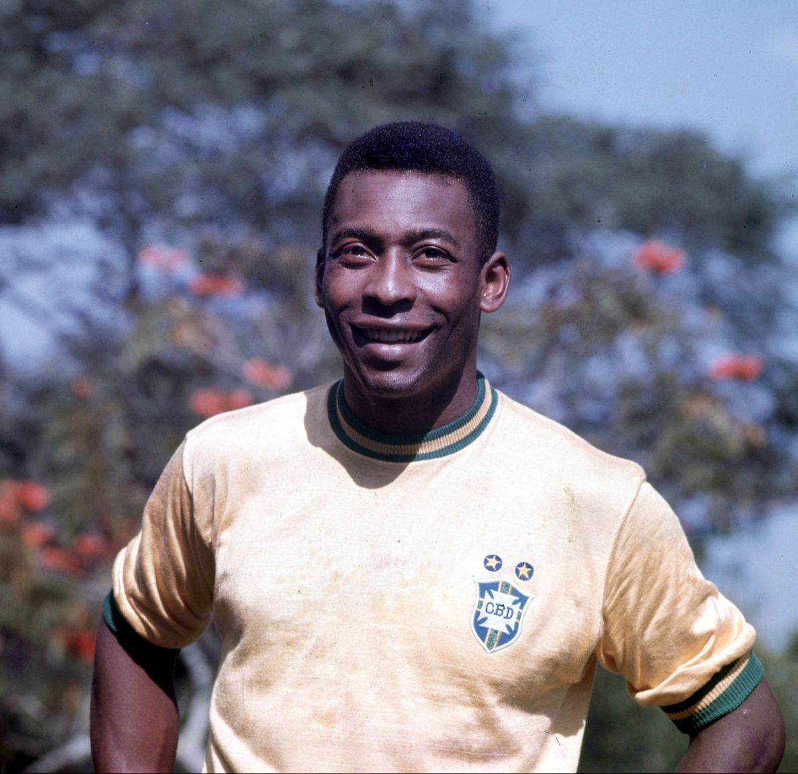
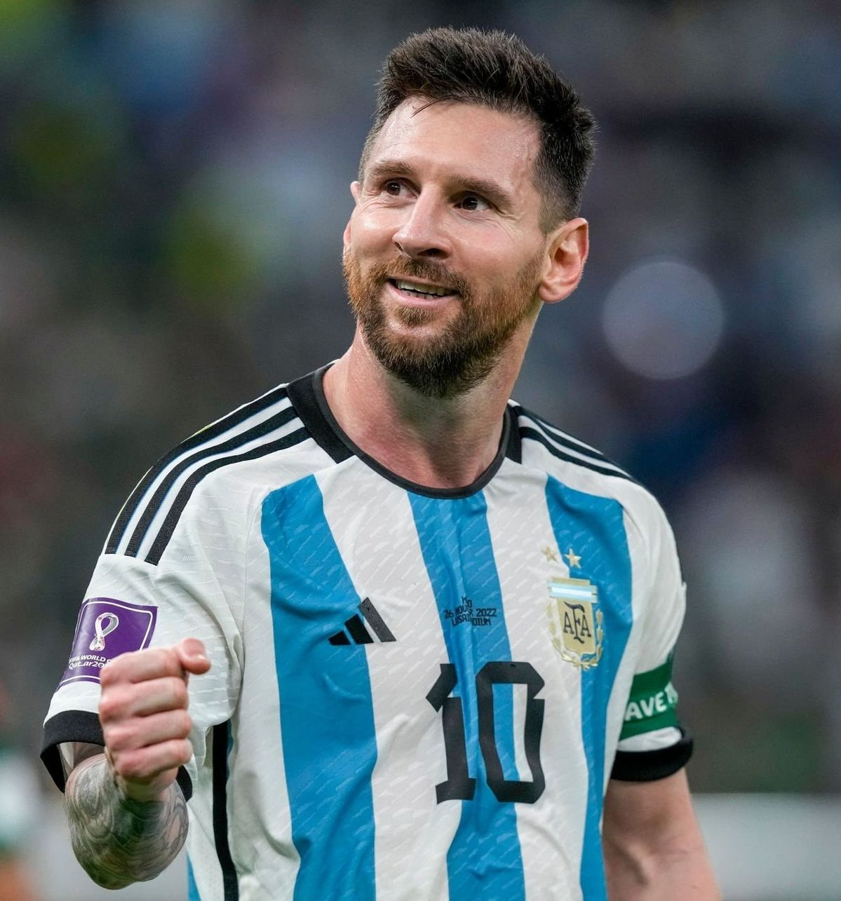
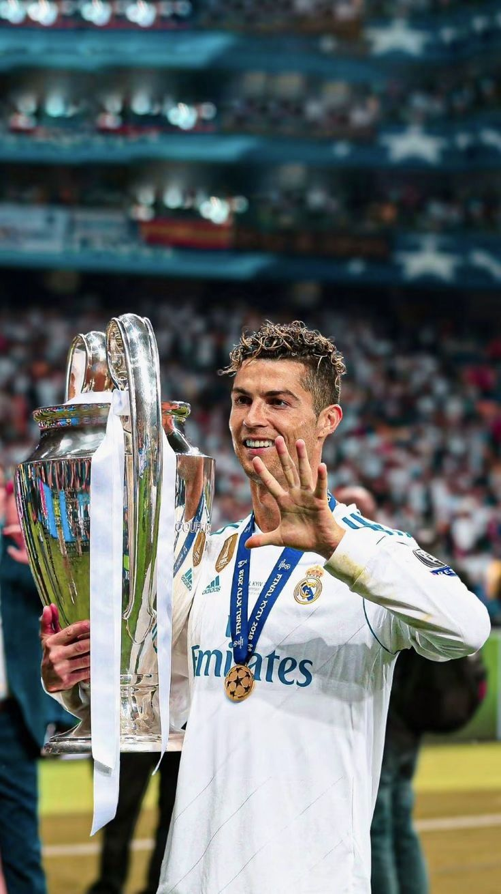
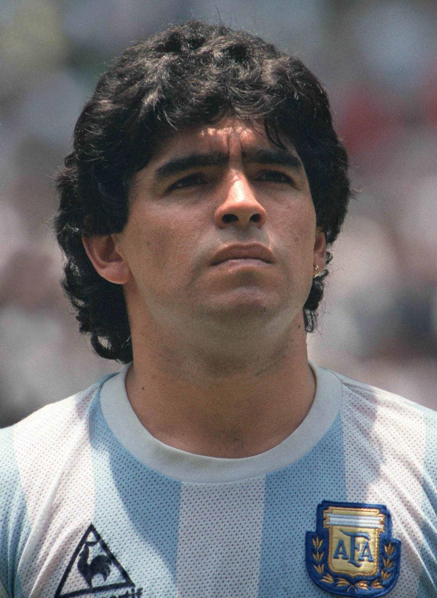
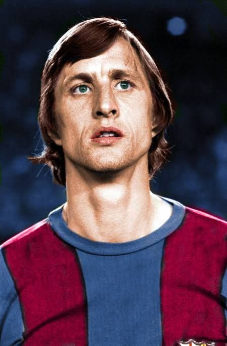
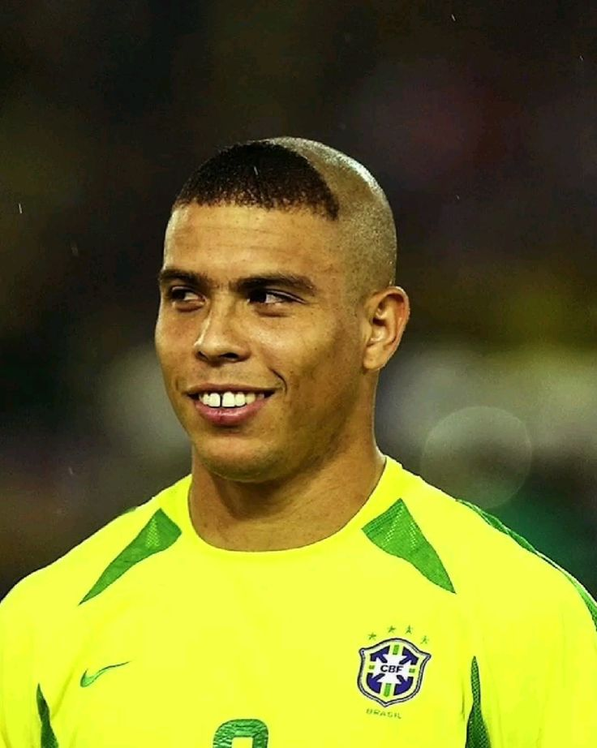

Pelé: o rei do futebol
23 de Outubro de 1940 - 29 de Dezembro de 2022

Edson Arantes do Nascimento é o pioneiro da excelência no futebol, combinando técnica, força e visão de jogo de forma única, sendo o maior símbolo do "Jogo Bonito".
- Três Copas do Mundo FIFA (1958, 1962 e 1970).
- Mais de 1.000 gols na carreira profissional.
Lionel Messi: o ET
24 de Junho de 1987

Lionel Messi é aclamado por seu talento inato e sua capacidade de criar jogadas. Sua técnica apurada e domínio da bola o tornam um dos mais completos criadores de jogo.
- Campeão da Copa do Mundo FIFA (2022) pela Argentina.
- Recordista de Bolas de Ouro com 8 conquistadas.
Cristiano Ronaldo - o Robô
05 de Fevereiro de 1985

O português é um símbolo de dedicação e longevidade. Sua ambição o levou a dominar o futebol em diferentes ligas e se tornar um dos maiores artilheiros da história..
- Vencedor de múltiplas Ligas dos Campeões da UEFA com 5 títulos.
- Maior artilheiro de seleções masculinas da história.
Diego Maradona - o Gênio
30 de Outubro de 1960 - 25 de Novembro de 2020

Diego Armando Maradona era a personificação do futebol arte e da paixão argentina. Sua liderança e habilidade mágica com a bola no pé levaram clubes e a seleção a picos inesperados.
- Campeão da Copa do Mundo FIFA pela Argentina (1986).
- Maior ídolo do Napoli, onde conquistou os primeiros títulos italianos do clube.
Johan Cruyff, o Mestre
25 de Abril de 1947 - 24 de Março de 2016

O holandês não só jogava futebol, ele o pensava. Cruyff foi o símbolo máximo do "Futebol Total" do Ajax e da Holanda, e mais tarde, como treinador, revolucionou o Barcelona.
- Três vezes vencedor da Bola de Ouro.
- Liderou a revolução tática no Ajax e no Barcelona.
Ronaldo Nazário: o Fenômeno
22 de Setembro de 1976

Ronaldo Luís Nazário de Lima redefiniu a posição de atacante com sua velocidade explosiva, dribles desconcertantes e finalizações letais, inspirando uma geração.
- Bicampeão da Copa do Mundo FIFA (1994 e 2002).
- Vencedor de múltiplas Bolas de Ouro e prêmios de Melhor do Mundo FIFA.